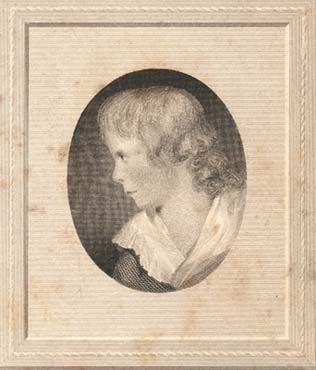

|
|
Home | Corson
Collection | Biography | Works | Image
Collection | Recent
Publications | Correspondence | Forthcoming
Events | Links | E-texts | Contact
The Bath Miniature: The First Portrait
of Scott
Little information is available on the first
known portrait of Scott, an unsigned head and shoulder length
miniature painted during a childhood stay in Bath. Painted
in watercolour on ivory and measuring 2 x 1½ inches,
it shows a fair-haired young Scott in profile to the left,
wearing a scarlet dress with a white collar. According to
Lockhart, Scott was six years old at the time of sitting,
but he may have overestimated his age. It is difficult to
establish precise dates for Scott's visit to Bath, where
he was sent in the hope that the spa waters might help cure
his lameness (see Sandyknowe
and Early Childhood). Scott set off for England in the
summer of 1775, visited London en route, and subsequently
spent around a year in Bath. It seems reasonable to assign
the portrait to summer 1776, when Scott would have been five
years old or nearly so.
Lockhart erroneously believed that the copy of the miniature
displayed at Abbotsford was
the original, and it was used as the source for John
Horsburgh's engraving for the second Edition of Lockhart's Memoirs
of the Life of Sir Walter Scott, Bart. (1839). The
original, however, was given by Scott's mother to Mrs.
Captain Watson, wife of Andrew Watson, and was subsequently
acquired by David
Laing. Laing bequeathed it to the Society
of Antiquaries of Scotland who in turn gifted it to
the current owners City
of Edinburgh Museums and Galleries.
|

The 'Bath Miniature'
engraved by John
Horsburgh, for the 2nd edition of Lockhart's Memoirs
of the Life of Sir Walter Scott, Bart. (1839)
|
|
To date, no altogether satisfactory attribution for the miniature
has been proposed, but Francis Russell, in his definitive study
of Portraits of Sir Walter Scott (see Bibliography),
is inclined to accept Sir John Pope-Hennessy's suggestion that
the artist may be 'Daniels of Bath'. A group of miniatures attributed
to 'Daniels of Bath' may be the work of Abraham Daniel (d. 1806)
or his brother Joseph (ca. 1760-1803), or distributed between the
two. Both artists appear to have worked in or around Bath in the
last three decades of the eighteenth century. As they appear to
have set up in opposition and both claimed to be 'Mr Daniel', there
is considerable difficulty in assigning miniatures to one or the
other. As only Abraham left a signed work (a portrait of Rabbi
Moses Ephraim of Plymouth), art historians have tended to attribute
work to him alone. Daphne Foskett provides a description of the
characteristic style of 'Daniels of Bath' which matches well with
that of the 'Bath Miniature':
Their style of painting is easily recognisable once it has been
studied, the hair is painted softly, in large masses, without
much detail, the eyes are large and usually wide open, the eyelids
strongly delineated, and the features shaded so as to emphasize
the modelling of the cheeks and nose; the mouth is clearly defined,
and the general effect of the work is that it has a slightly
glossy appearance, due to the use of gum with the pigments.
Lockhart judged the Bath portrait 'a very good miniature'. The
outline of the profile was 'wonderfully like what it was to the
last; the expression of the eyes and mouth very striking -- grave
and pensive' (IX, 259).
Click here for further
information on the engraver John Horsburgh.
Bibliography
- Foskett, Daphne. A Dictionary of British
Miniature Painters (London: Faber & Faber, 1972)
- Johnson, Edgar. Sir
Walter Scott: The Great Unknown (London: Hamish Hamilton,
1970)
- Lockhart, John Gibson. Memoirs of
the Life of Sir Walter Scott, Bart., 2nd edn (Edinburgh:
R. Cadell, 1839)
- Russell, Francis. Portraits
of Sir Walter Scott: A Study of Romantic Portraiture (London:
The Author, 1987)
Back to Index

Last updated: 27-Feb-2006
© Edinburgh University Library
|
|